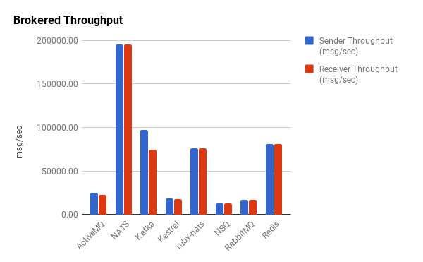

2022年01月15日 星期六 上午0
NATS是Neural Automatic Transport System的缩写，翻译成中文是神经自动传输系统。
1
本节译自Publish Subscribe。
NATS实现了一个分布式、一对多的、消息发布订阅通讯模型。发布者Publisher）发送一个消息到一个主题（Subject），任何监听在这个主题的活跃的订阅者（Subscriber）收到这个消息。订阅者也可以关注通配符匹配的主题，这有一点点像正则表达式的意思。如下图示：
+----------+
+-----msg1-->|Subscriber|
| +----------+
|
|
+---------+ +-------+ | +----------+
|Publisher+-----msg1---->|Subject+---+-----msg1-->|Subscriber|
+---------+ +-------+ | +----------+
|
|
| +----------+
+-----msg1-->|Subscriber|
+----------+
这种一对多的模式有时候也叫扇出（Fan-Out）。
2
以下译自https://derekcollison.net:
Connect Everything
连接所有
以下译自About Synadia:
在Synadia，我们相信有一个机会，创建第一个去中心化的，安全的全球公共服务，并由NATS.io所加持，来连接所有数字系统，服务和设备。
3
上节大略勾画NATS志向，要：
连接所有
何谓所有（Everything）？
- 所有数字系统，
- 所有服务，
- 所有设备。
所有的数字系统是指：
- IaaS云，包括中心云和边缘云，
- PaaS云，比如一个K8S集群，或者一个LXD集群，包括中心的和边缘的，
- 操作系统，包括虚机，物理机，系统容器，
- 一组服务的集合。
所有服务是指：
- 云原生服务，
- 非云原生传统服务，
- 运行在物理机上的服务，运行在虚机上的服务，运行在容器里的服务，
- 跑在嵌入式设备里的服务，
- 有状态服务，无状态可以扩容的服务，
- http服务，grpc服务，tcp服务，udp服务。
所有设备：
- 手机，
- 嵌入设备，
- PC，
- 虚机，物理机，等。
4
本节翻译，缩写自In Depth JWT Guide。
什么是Account？ Account是NATS的隔离上下文。
这个简明的论断无疑是正确的，也可能是准确的，但是不容易理解的。我们按这个思路来理解，可能会好一些。首先问，NATS的资源是什么？显然是Subject，因为NATS的一切围绕Subject展开。那Account就是NATS里Subject的名字空间（Namespace）。假设有两个Account，A和B。在A和B里，可以各自有一套 Subject，即使彼此重名，也可以并行通信无误。如下，Account A和Account B，在Account A里，有Subject a和Subject b，在Account B里，有Subject c和 Subject d：
.
├── A
│ ├── a
│ └── b
└── B
├── c
└── d
账户A里的用户只能访问到Subject a和Subject b，账户B里的用户只能访问到 Subject c和Subject d。那这就是隔离。那如果B账户里的用户希望访问到A账户里Subject怎么办呢？那就需要A账户把Subject Export出来，这样B账户可以 Import进来使用。比如：
accounts: {
A: {
exports: [
{stream: a},
{service: b},
]
}
}
如上， Account A把自己的Subject a以stream的形式暴露出来，把Subject b以 service形式暴露出来。 这样Account B可以Import：
accounts: {
B: {
imports: [
{stream: {account: A, subject: a}},
{service: {account: A, subject: b}},
]
}
}
因为在Account B里没有名为a和b的Subject，因此可以直接以Subject的原名引入。 对以Stream形式引入的Subject a，Account B里用户只可以订阅。对以 Service形式引入的Subject b，Account B里的用户既可以订阅，也可以发布，还可以执行请求回复操作，简直和用自己Account里的Subject一样。
5
译自Virtualization and containerization considerations。
嗯你当然可以用容器编排系统，诸如Kubernetes，Nomad或Docker Swarm来部署你的NATS服务器基础设施，的确也有非常多的人如是做，我们的推荐是，对 NATS服务基础设施只是：基础设施。意思是它最好运行在和你的容器同等的基础设施上，而不是在容器里。
因为每一层的虚拟化，容器化和重导向1都可能是问题之源，都可能导致延迟，并且容器编排系统在那去提供服务（例如，检测进程是一直在运行还是没有，重导向相应网络流量以提供高可用的形式），这些已经更好，更快地实现在了NATS自己里。
问自己这个问题，如果你想得到最优性能，最大可靠性，最快速的容错倒换，你会在容器里运行你的数据库服务吗，并且用Kubernetes/Nomad/Swarm编排？还是直接在虚拟机里，在尽可能接近裸机的环境里运行他们？
NATS服务器是高效地‘消息路由器’。他们持续从网络得到数据，通过网络发送数据。如果JetStream启用的话还会持续读写文件。他们高度优化有很多，诸如内置心跳，故障转移和流控机制。在NATS服务器进程，网络和磁盘之间的层级数越小，它就工作的越快，并且这些多出的层级还有可能破坏或者放置比如一些配置错误。并且你并不依赖代理呀，端口映射呀或者DNS一些伎俩，只是为了让你的客户端应用能连上NATS服务器实例，因为你的容器编排系统把他们挪到一边去了，如果运行在虚机里，他们只需简单地重启，客户端继续用相同已知IP地址或者别名。
iptables -t nat -A PREROUTING -p tcp -j REDIRECT ...
6
现在我们看看代理消息队列。

咋一看，代理消息队列比无代理消息队列吞吐量引人注目地减少，大部分降好几个数量级。半数代理消息队列的吞吐量在25,000消息/秒以下。Redis数字也许有点误导。尽管提供了发布订阅的功能，Redis也不是真为一个鲁棒的消息队列而设计。与ZeroMQ类似风格，Redis断连慢客户端，重要的是，它也不能可靠处理这类消息。因此，我们踢它出局。Kafka和ruby-nats性能与Redis类似，但在没有间歇失败情况下可以可靠处理消息。NATS的Go实现，gnatsd2，作为一个代理消息队列，吞吐量表现杰出。
不考虑特殊情况，我们看到代理消息队列吞吐量相当一致。不像无代理库，发送和接受有少到几乎没有的不一致，基本都差不多。
如今叫回了NATS。